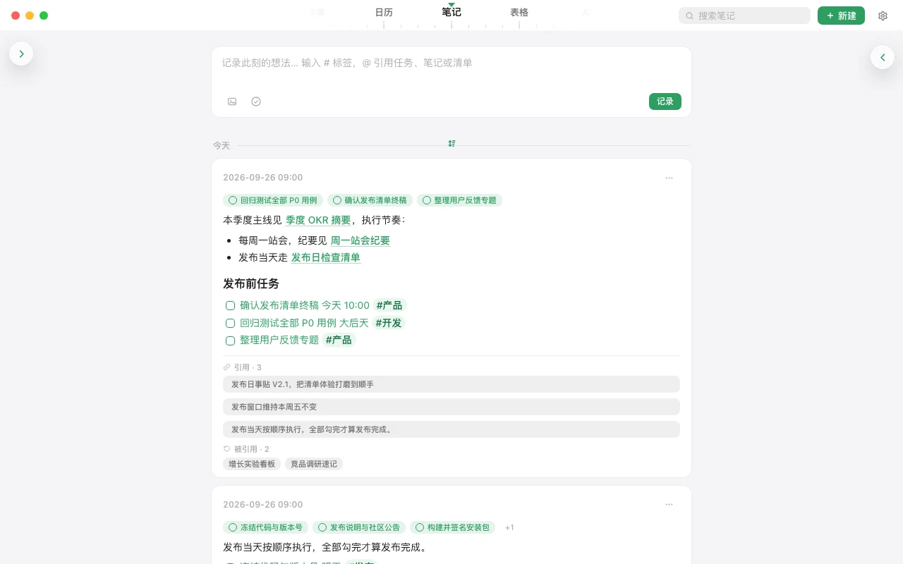
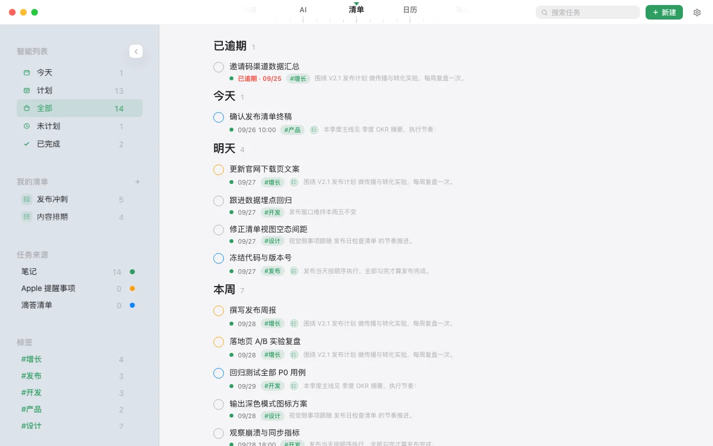
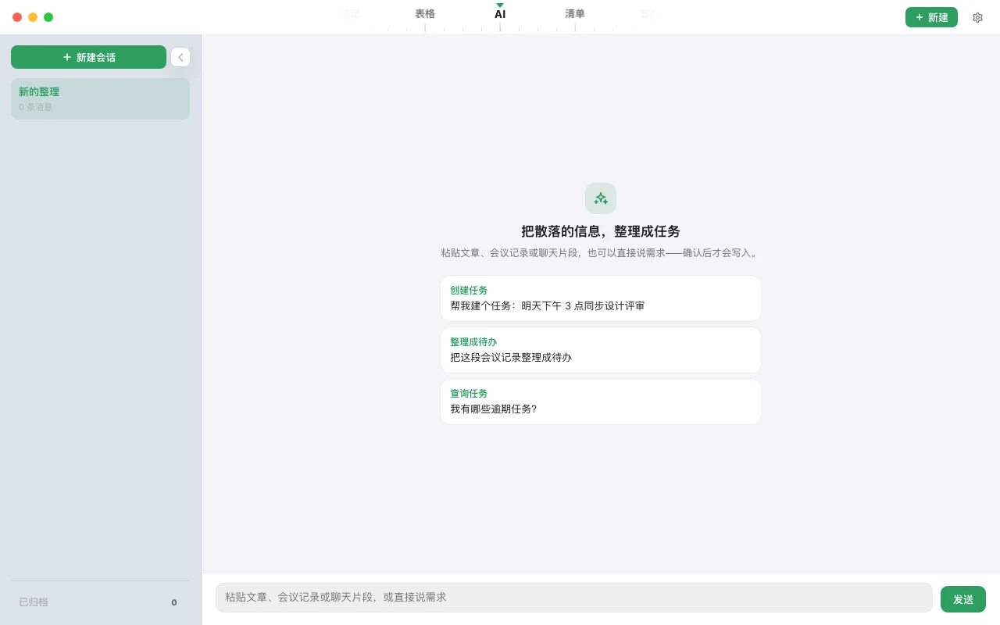

双向链接
输入 @ 引用任务、笔记或清单；每条笔记下方列出「引用」与「被引用」，一点就回到上下文。
笔记 × 待办清单 · macOS
在笔记里写下 - [ ]，它就是一条任务，自动汇进你的清单；在清单里勾掉，笔记里的那一行也同步打勾。
核心功能
不用把任务从笔记搬到另一个 App。在日事贴里记笔记，散落各处的任务行自动汇成一份能执行的清单。
笔记里写下的任务行，自动变成真实任务；在清单里勾掉，笔记里的那一行同步打勾，两边永远一致。
- [ ] 或 -【】，即成任务行
会议纪要、聊天记录、文章片段，直接粘进来。AI 识别其中的任务、截止日期和标签，你确认后才会写入笔记。
03 · 多种视图
按日期排、按日历铺开、按轻重缓急分——清单、日历、四象限随时切换，任务始终来自同一份笔记。
真实界面
原生的 macOS 体验：智能列表、自定义清单、标签和任务来源都在侧栏，一眼看清今天该做什么。


更多能力
输入 @ 引用任务、笔记或清单；每条笔记下方列出「引用」与「被引用」，一点就回到上下文。
按标签、截止日期、来源笔记多条件筛选，结果存为「今天」「工作」等列表。
全局快捷键唤起捕捉窗口，想法随手记下，自然汇入清单。
用说的创建、查询、改期任务：「明天下午三点提醒我交稿」。付费
变更链三方合并，冲突自动消解；离线可用，联网自动对齐。付费
笔记与任务可随时导出为 Markdown；从 Obsidian、flomo 迁移过来，也只需一次导入。
本地数据免费，且永远属于你。
收费的是流动与智能，不是赎回你自己的数据。
任务就写在笔记里，不用再复制到另一个 App；清单里勾掉，笔记里那一行也跟着打勾。
记录、管理、筛选、捕捉，在你设备上发生的一切都不收费。
不注册、不登录，即可使用全部本地功能。账户只为同步而存在。
存在你自己 Mac 上的本地数据库里。不开同步，数据不会离开你的设备；也可以随时在设置里导出为 Markdown 备份。
可以。在设置里选择 Obsidian 笔记库文件夹或 flomo 导出文件，笔记、- [ ] 任务、#标签和 [[双链]] 会一并导入。导入是一次性复制，原文件保持不变。
数据保存在你 Mac 本地，删除 App 本身不会清除它们。如果不再使用，建议先在设置里导出为 Markdown，任务会以 - [ ] / - [x] 保留，任何编辑器都能打开。
本地功能永久免费，包括笔记、任务提取与写回、智能列表、多种视图。多端同步、语音指令等增值服务将单独收费，具体方案会在正式发布时公布。
不需要。不注册、不登录即可使用全部本地功能，账户只在开启同步时使用。
目前支持 macOS 13 及以上，Apple 芯片和 Intel 芯片的 Mac 都可以使用。Windows 版正在准备中。